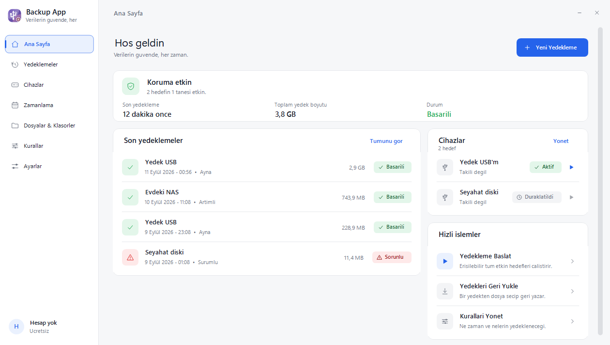
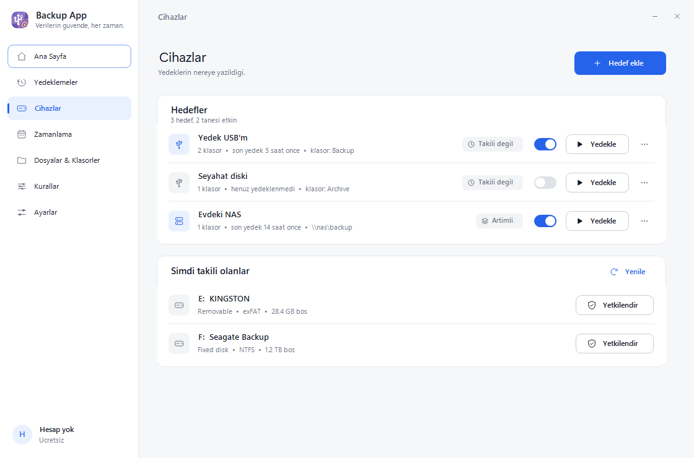
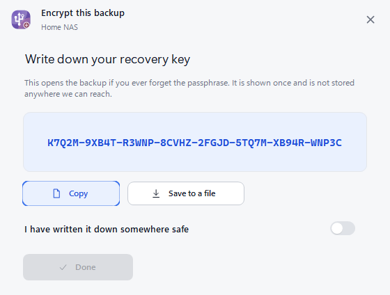
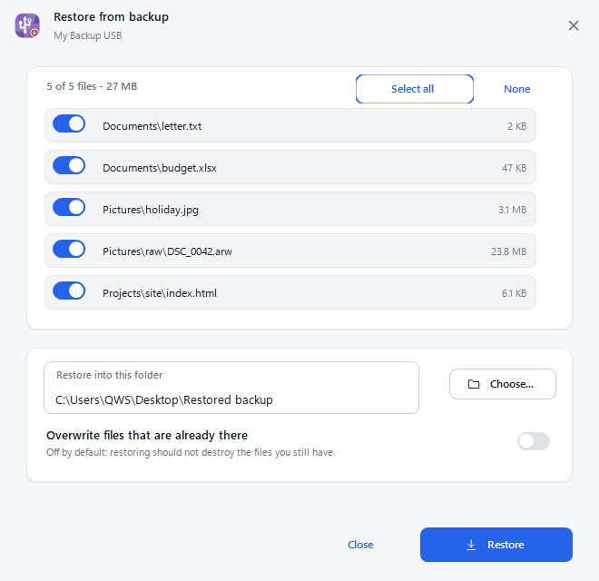
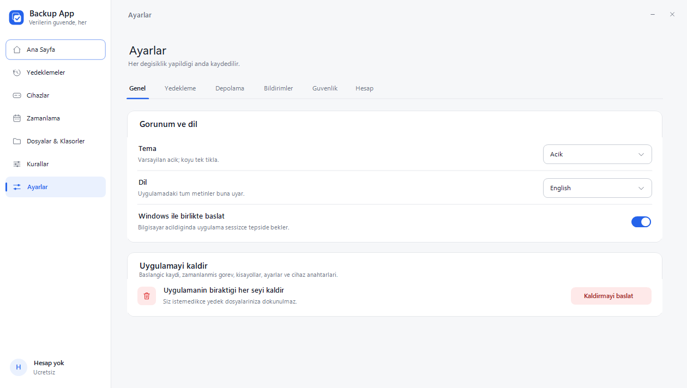
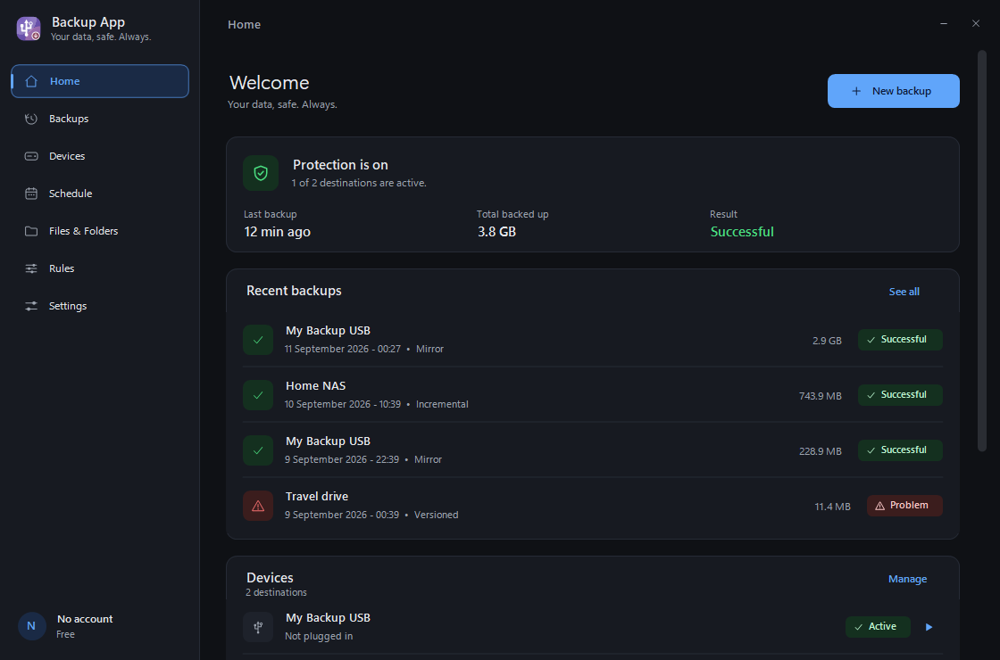
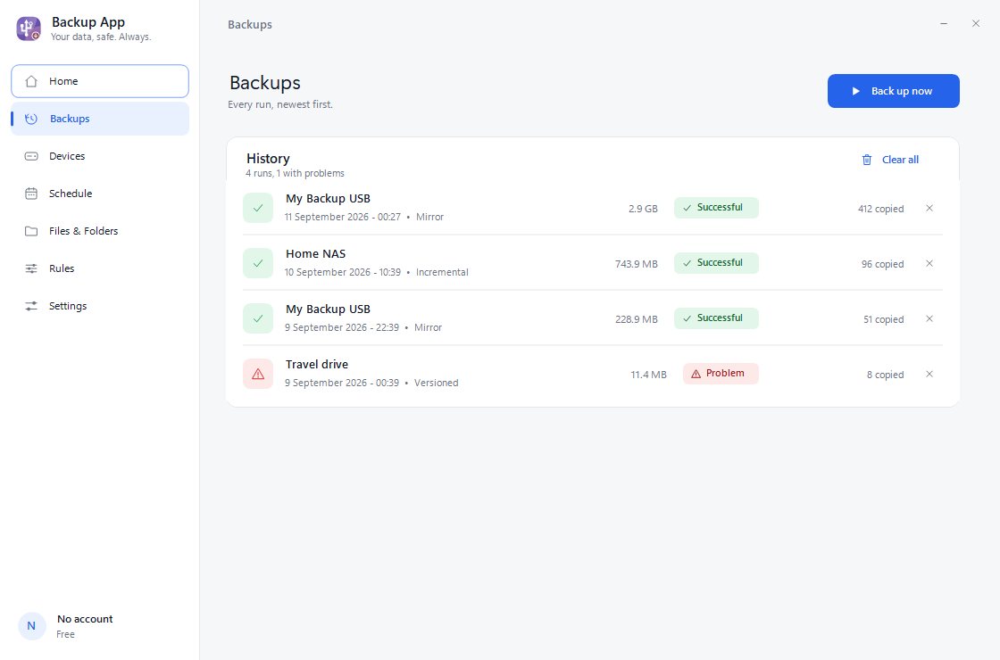
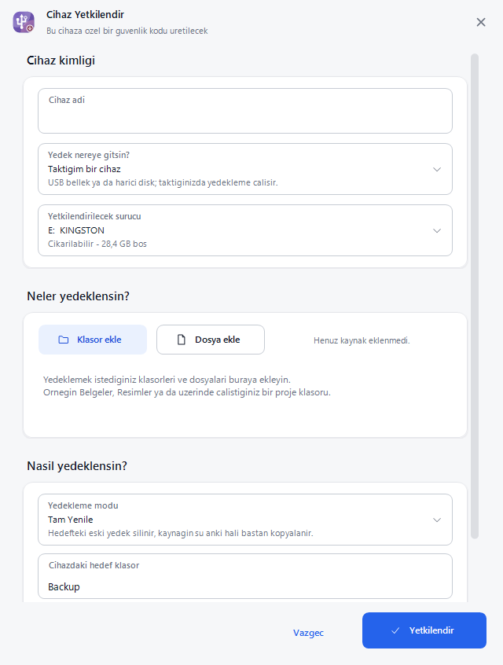

Yedekleme, sen unutsan da olur.
USB belleğini tak, yedek kendiliğinden başlasın. Ya da bir NAS, bir bulut hesabı ekle; kendi saatinde çalışsın. Dosyaların bilgisayarından çıkmadan şifrelenir.
Ücretsiz. Kurulum tek dosya, yönetici hakkı istemez. Windows 10 ve 11.

Bir kez kur, sonra unut
Uygulama saatin yanında sessizce bekler. Yetkilendirdiğin bir cihaz takıldığında işe koyulur; uzak bir hedef varsa kendi zamanlamasında çalışır.
Takınca başlar
Cihazı bir kez yetkilendirirsin. Her takışta yedek kendiliğinden çalışır; hiçbir düğmeye basman gerekmez.
Yalnızca senin cihazın
Her yetkili cihaza gizli bir işaret yazılır. Başka bir bellek takıldığında hiçbir şey olmaz.
Unutursan hatırlatır
Uzun süredir yedek almadıysan sessiz bir bildirim gelir. Asıl sorun zaten unutmaktır.
Cebindeki bellek, evdeki kutu ya da bulut
Sekiz hedef türü var ve hepsi ücretsiz. Aynı anda birkaçını birden kullanabilirsin; her hedefin kendi modu, kendi zamanlaması ve kendi kaynakları olur.
| Hedef | Not |
|---|---|
| USB / harici disk | Takınca çalışır |
| Ağ klasörü (NAS) | SMB |
| WebDAV | Nextcloud, Synology, QNAP |
| SFTP | SSH üzerinden |
| Hedef | Not |
|---|---|
| S3 uyumlu | Backblaze B2, Wasabi, R2, MinIO |
| Google Drive | Google/Microsoft/Dropbox hesabıyla |
| OneDrive | Google/Microsoft/Dropbox hesabıyla |
| Dropbox | Google/Microsoft/Dropbox hesabıyla |

Kara kutu — onu tutan kişiye bile
Şifreleme bilgisayarında olur. Hedefe ulaşan hiç kimse — bulut sağlayıcısı, NAS'ına erişen biri, belleği bulan biri, biz — dosyalarını okuyamaz. Dosya adları ve klasör yapısı da gizlenir; bir klasörün adı bile bilgi verir.
AES-256-GCM
Her parça kendi doğrulama etiketini taşır. Tek bir bit değişse çözme reddedilir; bozuk bir yedek sessizce yanlış veri döndürmez.
Kurtarma anahtarı
Parolanı unutursan tek dönüş yolu. Bir kez gösterilir. İkisi de kaybolursa yedek okunamaz — uçtan uca şifrelemenin anlamı budur.
Silmeye karşı koruma
Yalnızca ekleme kipinde bu bilgisayar yedeğe ekleyebilir ama silemez. Silinen dosya işaretlenir ve geri alma süresi boyunca durur.


Açık ve koyu, Türkçe ve İngilizce
Arayüz sıfırdan çizildi: her düğme, her kart, her ikon. Windows'un kendi yazı tipini kullanır ve sistemin temasını izleyebilir.




Daha derine
Ayrıntıyı seven için: neyin nasıl şifrelendiği, deponun biçimi, uygulamanın kendi denetim raporu.
Güvenlik
Ne saklanır, ne saklanmaz; hangi saldırıya karşı ne yapılır, ne yapılamaz.
Güvenlik sayfası →